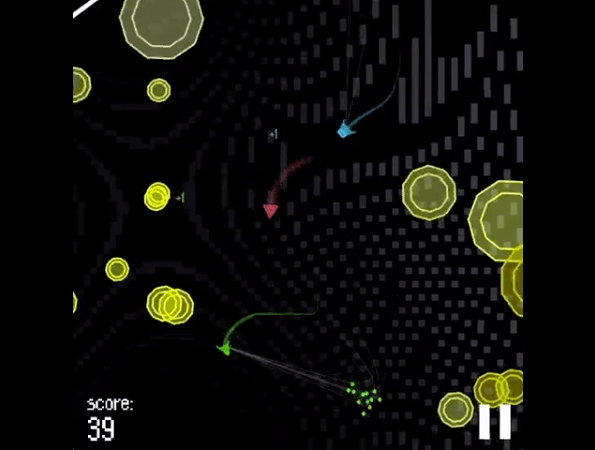
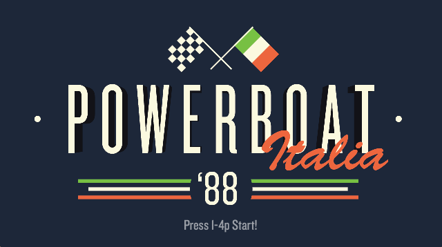

Now Featuring...
Nest ///
Nest is a competitive local multiplayer game where you control cute, wobbly and wonky felted wool creatures and fight to control all the nests in the sky. Capture a nest by flying into it. Once inside, you'll have to defend it against incoming opponents for 4 seconds before it becomes yours. Win a round by capturing all the nests! 

Foiled! ///
A local two player fighting game centered around soul-theft and a simple yet deceptively deep dueling system. Think Super Smash Bros meets Nidhogg.
Outwit, outwiggle, and outstab your off-color twin, then steal their soul. Demonstrate your outfakery, your outpokery, your well-timed mischievious swordplay, and generally juke your way to handing your friendly local opponent a completely humiliating takedown.
Controllers strongly recommended, but keyboards are supported.
Some mind-games may apply.
Upcoming Games
Particle Mace ///
PARTICLE MACE is an upcoming game for Windows/Mac/iOS by Andy Wallace about swinging particles into enemies in a hostile universe.
PARTICLE MACE is a game about capturing the thrill of classic arcade games with a new, physics based mechanic.
PARTICLE MACE is a game about trying not to die, but that's impossible.
Powerboat Italia '88 ///
POWERBOAT ITALIA '88 is frenetic speedboat racing game that combines old-school button mashing with precision maneuvering and timing. Up to 4 powerboaters storm their way toward the prospect of supreme victory and unending fame by boosting over hurdles, snagging powerups, and blocking the paths of their rivals. It's a true test of endurance... and a measure of just how far you'll go to win.
Previous Games

Field-1